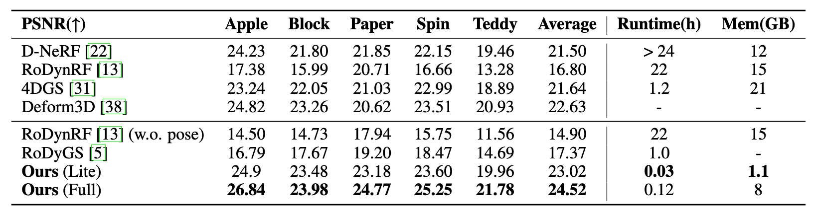

Method Pipeline

Animation
Qualitative Results on Davis Dataset
Quantitative Results on the Dycheck Dataset

In this work, we present INSTANT4D, a monocular4 reconstruction system that leverages native 4D representation to efficiently process5 casual video sequences within minutes, without calibrated cameras or depth sensors.
Our method begins with geometric recovery through deep visual SLAM, followed by grid pruning to optimize scene representation. Our design significantly reduces redundancy while maintaining geometric integrity, cutting model size to under 10% of its original footprint. To handle temporal dynamics efficiently, we introduce a streamlined 4D Gaussian representation, achieving a 30x speed-up and reducing training time to within two minutes, while maintaining competitive performance across several benchmarks. We further apply our model to in-the-wild videos, showcasing its generalizability
